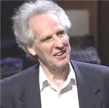

Benjamin Zander: Con los ojos brillantes (Conferencia TED)
Desde hace algún tiempo he querido subtitular esta charla. Es una de esas conferencias que te hablan de una manera personal, independientemente del tema que tratan.
En este caso, el ponente nos habla sobre la música clásica, pero podría decirse que se trata más bien sobre la pasión por algo, la confianza en tus sueños, el liderazgo y el significado auténtico del éxito. Además de eso, viendo esta charla pueden aprenderse varias cosas sobre cómo transmitir un mensaje de manera efectiva.
Música clásica con los ojos brillantes
Benjamin Zander es un director de orquesta británico-americano. Es el director de la orquesta Filarmónica de Boston y miembro del Conservatorio de Nueva Inglaterra. Es muy conocido por sus interpretaciones de la música del período Romántico y de principios del siglo XX, en particular de la obra de Gustav Mahler.
{kind=link}
También tiene una amplia carrera dando conferencias sobre liderazgo y es co-autor con su pareja, Rosamund Stone Zander, del libro El Arte De Lo Posible (en inglés The Art of Possibility: Transforming Professional and Personal Life) que ha sido traducido a 17 idiomas.
Que disfruten la conferencia.
Actualización [1 de junio de 2009]: Esta es una versión nueva, que corrige algunos errores de la versión anterior. Y a partir de hoy, completo en YouTube, gracias al apoyo de Keny que ha ofrecido alojarlo a este y otros videos en su canal.
[Charla completa en YouTube por cortesía de Keny. Para conexiones lentas, desactivar el botón HQ.]
Descarga* este video en HQ (480p): Parte 1 Parte 2 Parte 3
-Reunir las 3 partes en la carpeta deseada y extraer con WinRAR.
Archivo comprimido y dividido en formato .rar (descomprimido 218.6 MB)
Video: mp4, audio: AAC
Subtítulos en español: Ajmme Kajros
En TED: Benjamin Zander: Classical music with shining eyes.
*Archivo subtitulado y distribuido bajo los términos de uso de TED Conferences LLC.
Metadatos y acciones
 Temas: desarrollo personal, inspiracion, musica, tedtalk, video ⋅
Para guardar: Enlace permanente a esta anotación.
Temas: desarrollo personal, inspiracion, musica, tedtalk, video ⋅
Para guardar: Enlace permanente a esta anotación.
 Print This Post
Print This Post
Comentarios
Los comentarios están cerrados.
Categorías
Últimas 4 anotaciones
Últimas anotaciones en cada categoría

Divulgación
El dinero no fomenta la creatividad: Daniel Pink en TEDGlobal 2009

Inspiración
Los 30 no son los nuevos 20

Noticias
Ver tu mente en tiempo real: Christopher deCharms en TED 2008
![Música en la era digital [Animación]](../../../wp-content/themes/tma/images/featured/animation_04_2009_featured.jpg)
Ocio
Música en la era digital [Animación]
septiembre 16, 2008, 6:09 am
Información Bitacoras.com…
Si lo deseas, puedes hacer click para valorar este post en Bitacoras.com. Gracias….
noviembre 27, 2008, 9:09 am
cuando cliqueo sobre el link para descargar el vídeo me aparece la página pero me dice que el link es inválido
¿por qué?
Gracias
noviembre 30, 2008, 12:39 pm
El enlace no era correcto, ya lo reparé y puedes descargarlo.
Gracias por el aviso.
enero 15, 2009, 7:26 am
fantastico!!!
la belleza de la simplicidad y la pasion por lo que se ama y gusta hacer.
gracias por los subtitulos Ajmme!!
abrazos desde el sur de Chile
enero 19, 2009, 7:12 pm
Hey, gran aporte que nos hace usted a quienes aún no entendemos mucho del idioma inglés… ojalá y se anime a regalarnos otras charlas subtituladas. Mil gracias
enero 21, 2009, 11:08 am
Gracias Fredy, espero poder volver a continuar con el subtitulado.
Comentarios como el tuyo me motivan a seguir haciéndolo.
febrero 15, 2009, 9:23 pm
personas como el no solo dan un pequeño sentido a la vida… tb hay que agradecer al resto de las personas detrás del telon que se esfuerzan por que ese sentido, por pequeño que sea, llegue a oidos, ojos y corazones del resto…
Ajmme… gracias por las traducciones…
febrero 25, 2009, 10:37 am
Excelente. gracias por la opotunidad de compartir esta experiencia
abril 15, 2009, 8:15 am
Mil gracias, excelente traducción y video.
abril 26, 2009, 4:18 pm
Una charla fantastica, muchas gracias por compartirla.
junio 26, 2009, 8:51 am
hola….Ajjme Kajros descarge las 3 partes del video, y ahora no se como ver el video, me podrias enumerar los pasos para ver el video pro favor……gracias!!!!!
junio 26, 2009, 9:17 am
Hola Martín.
WinRAR debe armar el video original a partir de los 3 fragmentos que bajaste, así que todavía no lo puedes ver.
Pasos:
Las 3 partes del video deben estar en la misma carpeta.
Tienes que tener instalado WinRAR, si no lo tienes lo puedes descargar de aquí:
http://www.winrar.es/
(Donde dice: ¡ Descargue WinRAR ahora ! )
Aquí hay una guía para instalar WinRAR (es fácil, es siguiente siguiente):
Pues instalas WinRAR y vas a la carpeta donde están las 3 partes.
Le das clic derecho a cualquiera de ellas y debe salir una opción que diga “Descomprimir aquí”.
Si no sale, intenta darle doble clic (WinRAR debe abrirse) y tendrás en el menú la opción “Extraer en”, con eso sacas el video a la carpeta que quieras y podrás verlo.
Recuerda que las 3 partes deben estar en la misma carpeta.
Si tienes algún problema, me avisas por acá de nuevo.
Saludos
Ajmme
julio 30, 2009, 5:26 pm
[...] pasión por las cosas, por todo. Música clásica con los ojos brillantes. Los subtítulos son de Ajmme Kajros. SHARETHIS.addEntry({ title: “Con los ojos brillantes”, url: [...]
agosto 2, 2009, 6:17 pm
Me encanta este video, con esta ya es la cuarta vez que lo veo.
Saludos!
agosto 10, 2009, 1:27 am
Gracias Ajmme Kajros por tu trabajo de traducción. De verdad es de valorar tu trabajo por presentar aportes que traen beneficios para la vida, seguro que esperamos sigas compartiendonos mas cosas como este video. Por otro lado, un excelente video que motiva a seguir haciendo las cosas con pasión.
agosto 17, 2009, 1:41 pm
[...] Ajmme Kajros fue el que hizo el favor de realizar los subtítulos en español, así que no hay pretexto de no verla. Son sólo 20 minutos que valen mucho la pena, seguro te sacan una reflexión. Posted by Ulises E. Filed in el50 Leave a Comment » [...]
agosto 20, 2009, 4:17 am
Una amiga me envió este vídeo… justo en el momento en que estoy estudiando la Sonata Semplice de Mozart (el primer ejemplo que da). Puedo decir que hasta ahora la toco como el niño de 9 años, pero me ha ayudado a comprender el siguiente nivel… y por donde tengo que guiar mis pasos para seguir estudiando. Gracias a Ali y gracias a Benjamin por este empujoncito en mi lentísimo aprendizaje del piano (soy ya mayor), gracias también por la lección del éxito y los ojos brillantes…
agosto 22, 2009, 6:06 pm
[...] Ajmme Kajros fue quien hizo el favor de realizar los subtítulos en español, así que no hay pretexto de no verla. Son sólo 20 minutos que valen mucho la pena, seguro te sacan una reflexión. [...]
septiembre 7, 2009, 5:52 pm
La genial charla que iba subtitulada en español, la han bajado de google.
Muchos te agradeceremos la vuelvas a subir.
Es importante tu ayuda para difundir a este brillante y enérgico leader que desborda calidez y dice cosas inteligentes y emocionantes.
Gracias por tu interés.
Me abriste una ventana mas a la música que adoro.
Suerte!
septiembre 8, 2009, 10:31 pm
Hola Daniel,
Muchas gracias por tu comentario e interés, me encantaría resubir el video pero lo malo es que Google Video ya no acepta subidas de ningún tipo desde principios de 2009, así que ya no la puedo resubir ahí.
Están las subidas que tengo en YouTube, incluyendo esta que ves en esta página, pero en Google Video ya no me es posible subirla de nuevo (Google descontinuó Google Video y solo apoyará a YouTube para difusión de nuevos videos en el futuro).
Saludos y gracias por tu comentario.
septiembre 13, 2009, 3:59 pm
Hola de nuevo:
Entiendo lo de google video pero… y en you tube videos?
No es posible??.
Pusiste lo de Keny pero ahí no lo encuentro.
Que queda por hacer para tener un link a la conferencia traducida?.
Gracias
septiembre 13, 2009, 5:11 pm
Hola Daniel,
El enlace a la conferencia completa en el canal de Keny en YouTube está aquí:
http://www.youtube.com/watch?v=71w-oasL6iQ
Si visitas ese enlace también puedes enlazarla para ponerla en un blog ^_^
Si te estoy entendiendo mal y te refieres a otra cosa o necesitas más detalles no dudes en preguntarme. Saludos
septiembre 23, 2009, 4:52 pm
[...] del 2008, empecé a traducir cuando iniciaba este proyecto. Por alguna razón, la otra charla (Benjamín Zander: Con los ojos brillantes) se publicó unas semanas después, mientras que ésta se quedó esperando durante meses en un [...]
octubre 31, 2009, 1:56 am
[...] Ajmme Kajros y [...]
enero 15, 2010, 4:16 pm
Es espectacular la sencillez y la capacidad de llegada de Zander en esta conferencia.
Me ha emocionado profundamente, soy artista plástico y su manera me ha abierto nuevas posibilidades de hablar del arte con mis alumnos.
Muchas gracias a todos los que hicieron posible que. quienes solamente hablamos español. podamos entender tan estupendo momento.
enero 17, 2010, 8:03 pm
Extraordinario, simplemente extraordinario, de mis favoritos… gracias por la oportunidad de acceder a esta informacion tan valiosa… gracias…
febrero 26, 2010, 4:00 pm
[...] empecé a traducir cuando iniciaba este proyecto. Por alguna razón, la otra charla (Benjamín Zander: Con los ojos brillantes) se publicó unas semanas después, mientras que ésta se quedó esperando [...]
marzo 25, 2010, 10:03 am
[...] empecé a traducir cuando iniciaba este proyecto. Por alguna razón, la otra charla (Benjamín Zander: Con los ojos brillantes) se publicó unas semanas después, mientras que ésta se quedó esperando [...]
abril 24, 2010, 10:40 am
[...] Subtitulado para Youtube en Español por Ajmme Kajros Su Blog: http://ajmmekajros.com/anamnesis La entrada sobr Benjamin Zander en su blog: http://ajmmekajros.com/anamnesis/2008… [...]
mayo 2, 2010, 2:38 pm
[...] ? «Benjamin Zander: Con los ojos brillantes (Conferencia TED)». [...]
mayo 13, 2010, 10:35 pm
Increible!…gracias por subir y compartir!!!
junio 26, 2010, 7:33 am
BRILLANTE! Una verdadera genialidad, simple, profunda y conmovedora. UN MILLON de gracias, Ajmme, por compartirlo y contribuir a derribar las barreras del idioma. Y sobre todo por utilizar, como Benjamin Zander, el idioma que todos entendemos: el del corazón. Un fuerte abrazo desde Argentina! Jimena e Ivan
octubre 27, 2010, 2:00 pm
[...] de la Orquesta Filarmónica de Boston, la primera vez que vi este video fue en el blog Anamnesis (a quien agradezco como muchas otras personas la traducción) y realizó esta [...]
diciembre 27, 2010, 8:30 pm
[...] empecé a traducir cuando iniciaba este proyecto. Por alguna razón, la otra charla (Benjamín Zander: Con los ojos brillantes) se publicó unas semanas después, mientras que ésta se quedó esperando [...]
junio 3, 2011, 12:26 am
Definitivamente el arte de ser maestro es una gran responsabilidad, que marca la vida de quienes no solo te miran sino te siguen….
mayo 6, 2012, 12:00 pm
[...] 30 años de la Orquesta Filarmónica de Boston (la primera vez que vi este video fue en el blog Anamnesis a quien agradezco como muchas otras personas la traducción), y realizó esta conferencia el año [...]
mayo 6, 2012, 1:54 pm
[...] del 2008, empecé a traducir cuando iniciaba este proyecto. Por alguna razón, la otra charla (Benjamín Zander: Con los ojos brillantes) se publicó unas semanas después, mientras que ésta se quedó esperando durante meses en un [...]
noviembre 23, 2012, 6:25 am
[...] Subtitulado para Youtube en Español por Ajmme Kajros Su Blog: http://ajmmekajros.com/anamnesis La entrada sobr Benjamin Zander en su blog: http://ajmmekajros.com/anamnesis/2008/09/benjamin-zander-ted-talk/ [...]
febrero 20, 2013, 10:18 pm
que? cancion toca en 8:51?? disculpen mi ignorancia…